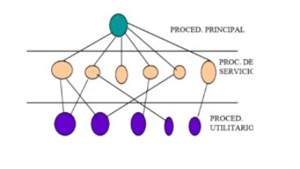

Es un Sistema Operativo con colección de procedimientos que se pueden llamar entre sí, sin una estructura propiamente dicha.

A la ejecución de los servicios del Sistema Operativo se le llama “Llamada al sistema” en la que se realizan los siguientes procesos:
Memoria principal
Programa del usuario en modo usuario
Sistema operativo en modo núcleo
Sistemas de capas
Es una estructura simple generalizada para los sistemas monolíticos. Organiza el Sistema Operativo con una jerarquía en capas de menos a mas. Siendo el primero de esta clase el sistema "THE" (1968).
Capa 0
Trabaja con la asignación del procesador
Alterna procesos
Proporciona multiprogramación
Capa 1
Administra la memoria
Asegura que las páginas requeridas lleguen a los procesos de memoria
Capa 2
Administra la comunicación entre cada proceso y la consola
Capa 3
Controla dispositivos E/S
Capa 4
Aloja los programas del usuario
Capa 5
Localiza el proceso utilizado del sistema
Máquinas Virtuales
Separan las funciones multiprogramación de la máquina extendida. El monitor de máquina virtual se ejecuta en el hardware y realiza multiprogramación soportando periféricos virtuales.
Modelo cliente-servidor
Los Sistemas Operativos modernos explotan la idea de mover el código a las capas superiores y mantener un núcleo mínimo. La mayoría de las funciones del Sistema Operativo se implantan en los procesos del usuario.
El Sistema Operativo se fracciona en 4 partes así haciendo cada parte más pequeña y aun más controlable.